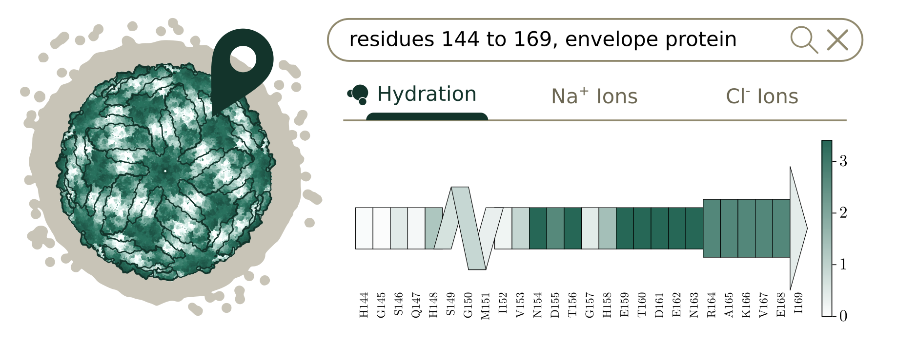

Supplementary Information of Mapping the Microenvironment in Zika Virus Dynamics
Camila Assis Tavares1,2, Martín Soñora3, Sergio Pantano3, Leandro Martínez1,21 Institute of Chemistry, Universidade Estadual de Campinas (UNICAMP), Campinas, SP, Brazil
2 Center for Computational Engineering & Science, Universidade Estadual de Campinas (UNICAMP), Campinas, SP, Brazil
3 Biomolecular Simulations Group, Institut Pasteur de Montevideo, Mataojo 2020, Montevideo, Uruguay
Corresponding author: lmartine@unicamp.br
Overview

This repository hosts the supplementary material for the study Mapping the Microenvironment in Zika Virus Dynamics. The study examines how water molecules and ions are spatially organized within the Zika virus at atomic resolution. Coarse-grained molecular dynamics simulations, analyzed with the ComplexMixtures.jl framework, were employed to map these distributions across the viral structure, highlighting localized preferences and differential interactions with the surrounding molecular components.
Dependencies
This work was developed using the following software and packages:
- Julia 1.11.2: Programming language.
- ComplexMixtures v2.10.1: For light-material distribution analysis.
- LaTeXStrings v1.4.0: For incorporating LaTeX-style formatting in plot labels and annotations.
- PDBTools v2.1.2: For handling and analyzing PDB files.
- Plots v1.40.9: For generating high-quality visualizations.
Installation
The dependencies can be installed in Julia using:
using Pkg
Pkg.add([
"ComplexMixtures",
"LaTeXStrings",
"PDBTools",
"Plots"
])Ensure that you are using Julia 1.11.2 for compatibility with the packages and scipts in the repository.
Funding
The authors acknowledge the financial support of Fapesp (2018/24293-0, 2023/14353-4). Research developed with the help of Coaraci Supercomputer (2019/17874-0).
References
Additional Resources
For additional resources and publications related to the scope of this paper, please visit the M3G Website.

This work was carried out by the M3G Group at Unicamp in collaboration with the Biomolecular Simulations Group at the Institut Pasteur de Montevideo.